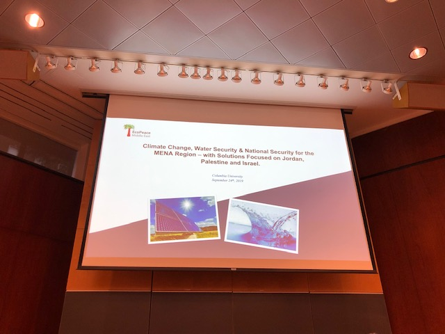
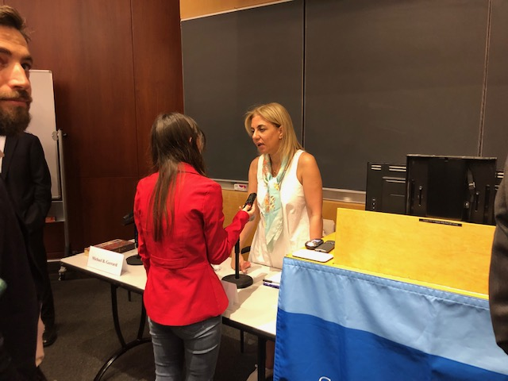

Water Shortage Solutions in Jordan, Palestine & Israel Could Foster Unity in the Greater Middle East
By Malique Morris
Water is arguably the world's most critical and ubiquitous natural resource, yet in the Middle East & North African (MENA) region it is also the scarcest. This scarcity exacerbates preexisting tensions in one of the most conflict laden parts of the world.
The Middle Eastern leaders of EcoPeace, a nonprofit organization that facilitates a collaboration among Jordan, Palestine and Israel, gathered at Columbia Law School to discuss the environmental and political impacts of rapid climate change on the at-risk region.
"Climate change is a threat multiplier to the whole MENA region," said Gidon Bromberg, EcoPeace's Co-Founder and Israeli Director. "It does lead to animosity and it does feed many of the conflicts that are raging in our region."
EcoPeace is using the three countries' plausible and interconnected solutions for water shortage in Palestine and Jordan, and the latter two's dependency on Israel as a primary supplier, as a blueprint to forge more harmonious relations within the greater Middle East. They plan on tackling more macro-sized conflicts by addressing the immediate intersection of ecological crisis and national security.
"If we can reach an agreement on water issues and improve the reality on the ground for all peoples," Bromberg said. "Then that creates a trust and that creates a confidence and from that we expect leadership to move forward on all of the other issues."
The organization plans on achieving this agreement by instituting equitable cross-border distribution of water and energy, through desalination - a process that removes mineral particles from saline water - in Israel and Gaza, Palestine, into the Jordan Valley, and transferring solar energy in Jordan into the other two countries.
Cross-border distribution could mitigate, and ultimately eliminate, tensions, by creating a channel of equal interdependency in this pocket of the Middle East.
"Palestinians are dependent on Israel on providing basic needs," said Nada Majdalani, the Palestinian Director at EcoPeace. "We are already heavily dependent for water supply and energy supply."

"If we can reach an agreement on water issues and improve the reality on the ground for all peoples," Bromberg said. "Then that creates a trust and that creates a confidence and from that we expect leadership to move forward on all of the other issues."
To secure the fiduciary support from the Palestinian government, Majdalani and her colleagues are presenting the cross-border distribution plan as "a way to reduce dependency on Israel."
Community support for the distribution plan has been garnered by "explaining the need for cooperation and highlighting the national interest,"" said Yana Abu Taleb, the organization's Jordanian Director. "But also, the benefits of that cooperation of creating win-win situations for all," in the MENA region.
| Factors of Climate Change in MENA Region | Visualization |
|---|---|
| Water Shortage | |
| Solar Energy | |
| Purification |
"We are committed through really producing research and data, which is a powerful tool," Taleb said regarding the nonprofit's strategy to secure government participation in the distribution plan. "That can help put pressure on the decision makers and that's what is really needed to help change policy in our countries."
EcoPeace has been and will continue to push its agenda of regional interdependency, through the mitigation of water scarcity, on the divided governments of Jordan, Palestine and Israel, by tapping into pre-existing initiatives.
"We are working within structures and the strategies that are already in place," Majdalani said. "To move forward for the stability of the region."